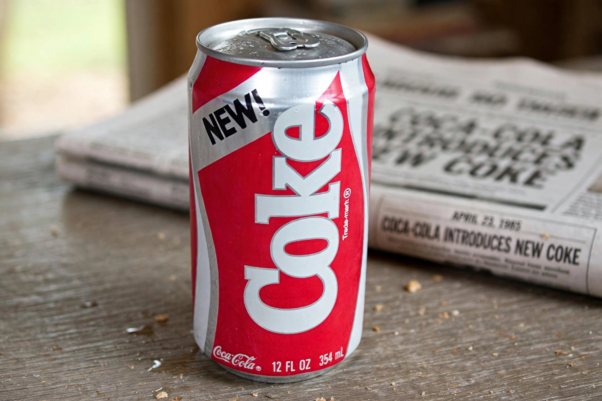

New Coke was the unofficial name of a reformulation of the soft drink Coca-Cola, introduced by The Coca-Cola Company in April 1985. It was renamed Coke II in 1990 and discontinued in July 2002. Its introduction is widely regarded as one of the most famous marketing blunders in history — though it ultimately strengthened the original brand.

Losing market share to sweeter Pepsi, validated by the 'Pepsi Challenge' taste tests, Coca-Cola developed a sweeter formula that performed well in blind tests. On 23 April 1985 the company replaced the original formula entirely, rather than launching a variant.
Consumers reacted with anger and protests; protest groups formed and thousands of complaints poured in. After 79 days, on 11 July 1985, the company announced the return of the original formula as 'Coca-Cola Classic'. Some commentators theorised — denied by executives — that the episode was a deliberate ploy to relaunch the original brand.
New Coke became a business-school case study in brand loyalty and the limits of taste-test research. It was briefly revived in 2019 in a promotion tied to the Netflix series Stranger Things.